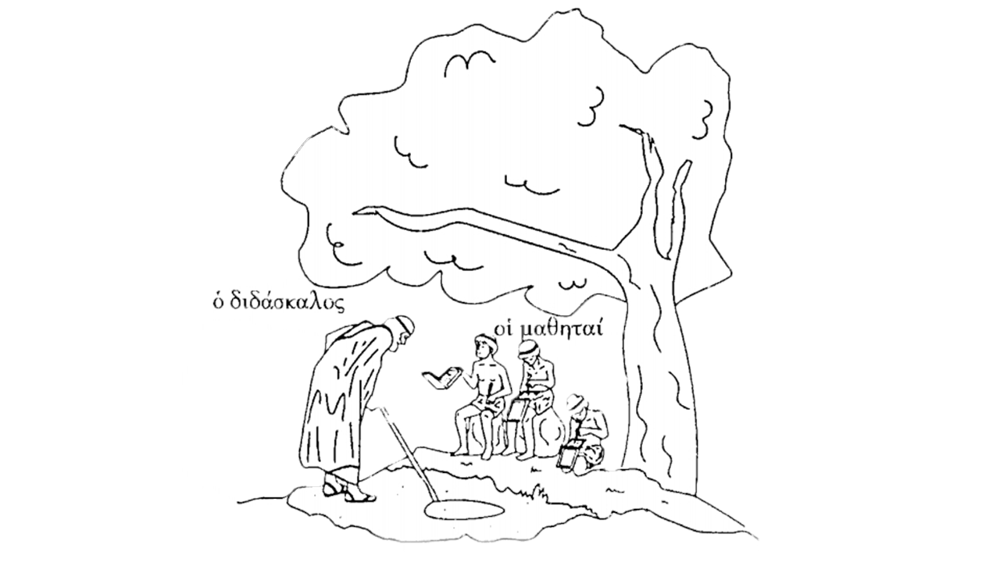
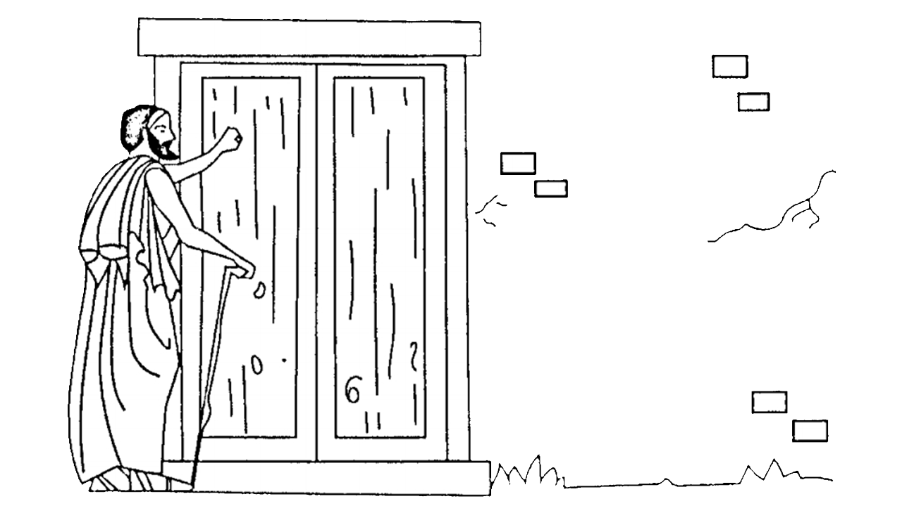
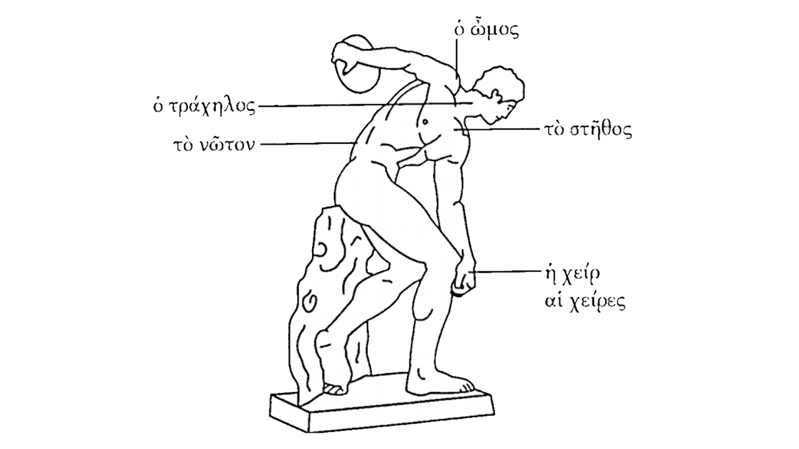

ΤΟ ΔΙΔΑΣΚΑΛΕΙΟΝ
Ἡμεῖς ουκ έχομεν μεγάλην οικίαν εν ᾗ διδάσκουσι πολλοὶ διδάσκαλοι· ὑμῖν γάρ εστιν οικία ἥ έχει πολλὰ δωμάτια, τὰ μὲν μεγάλα, τὰ δὲ μικρά· ὑμῖν δ’ εισὶ καὶ πολλοὶ διδάσκαλοι.
Εμοὶ εστὶ παιδαγωγός, ὅς δοῦλός εστι, καὶ άγει εμὲ εις τὴν κώμην παρὰ τὸν διδάσκαλον. Ὁ δὲ διδάσκαλος διδάσκει ὴ εν τῇ αυτοῦ οικίᾳ, ὴ εν τῇ αυλῇ, ὴ ὑπὸ τῷ δένδρῳ έξω.
Ὑμεῖς μὲν γράφετε καλάμοις εν παπύρῳ ὴ γύψῳ εν τῷ τοίχῳ· ἡμεῖς δὲ γράφομεν στύλῳ εν πινακίῳ ὴ ξύλῳ επὶ τῆς γῆς.
Ἆρα γιγνώσκεις πῶς δή εστι τὰ πινάκια ἡμῶν; Λέγω δή· ξύλινα μέν εστι τα πινάκια ἡμῶν, έστι δὲ επ’ αυτῶν μάλθα, εν ᾗ γράφομεν τοῖς στύλοις· καὶ μετὰ ταῦτα λεαίνομεν τὴν μάλθαν. Γράφομεν δὲ πολλάκις εν τῇ αυτῇ μάλθῃ. Ἡμῖν οῦν ούκ έστι πολλά πινάκια.
Εν τῷ πινακίῳ γράφομεν οὕτως· γάμμα, ῥῶ, άλφα, φῖ, ὸ μικρόν, μῦ, ψιλόν, νῦ· τοῦτ’ έστι γράφομεν. Γράφομεν καλῶς, διότι ουκ εθέλομεν πληγὰς λαμβάνειν. Καὶ γὰρ έχει ξύλον ὁ διδάσκαλος, ᾧ παίει ἡμᾶς ενίοτε· ου μέντοι πολλάκις παίει τὰ παιδία τῷ ξύλῳ, διότι αγαθός εστιν. Οἱ δὲ κακοὶ διδάσκαλοι πολλάκις παίουσι τὰ παιδία, εν ᾧ χρόνῳ διδάσκουσιν.

ΤΑ ΤΟΥ ΟΜΗΡΟΥ ΕΡΓΑ
Ἡμεῖς μανθάνομεν αναγιγνώσκειν τὰ τῶν ποιητῶν έργα καὶ λέγομεν τους στίχους αυτῶν άνευ πινακίου καὶ άνευ βιβλίου. Ὁ Ὅμηρος ὁ μέγιστος ποιητής εστι, καὶ αναγιγνώσκομεν τὰ αυτοῦ έργα· τὴν Ιλιάδα τε καὶ τὴν Οδύσσειαν. Χαλεπὸν δή εστι λέγειν τὰ Ὁμηρικὰ άνευ βιβλίου. Καλοὶ μαθηταί εσμεν, καὶ μανθάνομεν εῦ, επειδὴ οὕτως αγαθός εστιν ὁ διδάσκαλος.
Οἱ δὲ ῥαψῳδοὶ καὶ λέγουσι τὰ τοῦ Ὁμήρου άνευ βιβλίων. Πολλοὶ δὲ τῶν ῥαψῳδῶν ουχ ὁρῶσιν τὸν ἥλιον, επειδὴ τυφλοί εισιν· οφθαλμοὺς μὲν έχουσιν, αλλ’ ουχ ὁρῶσιν. Ὁ δὲ ῥαψῳδὸς έχει σκῆπτρον, ᾧ παίει τὴν γῆν εν ᾧ χρόνῳ περιπατεῖ.
Ῥαψῳδός τις δὴ τῆς ἑσπέρας πάρεστι πρὸς τὴν οικίαν μου καὶ παίει τὴν θύραν τῷ σκήπτρῳ καὶ βοᾷ: «τίς ένδον;» Ακούει δ’ ὁ οικέτης καὶ ανοίγει τὴν θύραν, καὶ ερωτᾷ· «πόθεν εῖ σύ; καὶ τί εθέλεις;» Ὁ δὲ ῥαψῳδὸς λέγει· «εγὼ μέν ειμι ῥαψῳδός καὶ εθέλω μένειν μεθ’ ὑμῶν τήμερον· δεῖ μοι σιτίων καὶ οίνου· εγὼ μὲν ῥαψῳδῶ τὰ Ὁμηρικὰ, ὑμεῖς δὲ ακούετε». Ὁ γὰρ οικέτης λέγει· «κάθιζε δή, ῶ ξένε, καὶ έσθιε καὶ πῖνε ὅσα εθέλεις· μετὰ δὲ τὸ δεῖπνον ῥαψῴδει μὲν σύ, ἡμεῖς δ’ ακούομεν άσμενοι.»

ΟΙ ΑΡΙΜΘΜΟΙ ΚΑΙ ΤΟ ΣΩΜΑ
Μανθάνομεν δὲ καὶ τοὺς αριθμούς· ὁ διδάσκαλος ἡμῶν διδάσκει ἡμᾶς αριθμεῖν. Καὶ αριθμοῦμεν καθ’ ἡμέραν οὕτως· ἕν, δύο, τρία, τέτταρα, πέντε, ἕξ, ἑπτά, οκτώ, εννέα, δέκα. Μετὰ δὲ ταῦτα ἕνδεκα, δώδεκα, τρία καὶ δέκα, τέτταρα καὶ δέκα, πέντε καὶ δέκα, ἕξ καὶ δέκα, ἐπτὰ καὶ δέκα, οκτὼ καὼ δέκα, εννέα καὶ δέκα, είκοσιν.
Μετὰ δὲ τὰ είκοσιν· ἕν καὶ είκοσι, δύο καὶ είκοσι, τρία καὶ είκοσι, τέτταρα καὶ είκοσι, πέντε καὶ είκοσι, ἕξ καὶ είκοσι, ἑπτὰ καὶ είκοσι, οκτὼ καὶ είκοσι, εννέα καὶ είκοσι. Μετὰ δὲ ταῦτα λέγομεν τῷ αυτῷ τρόπῳ περὶ τῶν τριάκοντα, τετταράκοντα, πεντήκοντα, ἑξήκοντα, ἑβδομήκοντα, όγδοήκοντα, ενενήκοντα καὶ ἑκατόν. Καὶ δὴ καὶ τῷ αυτῷ τρόπῳ μετὰ ταῦτα λέγομεν· διακόσια, τριακόσια, τετρακόσια, πεντακόσια, ἑξακόσια, ἑπτακόσια, οκτακόσια, ενακόσια, χίλια.
Μανθάνομεν δὲ καὶ τὸ σῶμα ἡμῶν· έχομεν γὰρ ἕν σῶμα, ὅ έχει μίαν κεφαλήν· επὶ δὲ τῆς κεφαλῆς κόμαί εισιν. Ὑπὸ δὲ τῷ μετώπῳ έχομεν δύο οφθαλμοὺς καὶ ὁρῶμεν αυτοῖς· ὁ μὲν οφθαλμός εστιν όργανον τοῦ ὁρᾶν, τὸ δὲ ὁρᾶν εστιν ἡ όψις. Έχομεν δὲ καὶ δύο ῶτα· τα ῶτα καὶ επὶ τῆς κεφαλῆς εστι, καὶ δὴ καὶ τὰ ῶτα εστὶ όργανον τοῦ ακούειν, ἡ ακοή. Έχομεν δὲ καὶ στόμα καὶ μίαν γλῶτταν.
Ἡ δὲ κεφαλὴ επὶ τοῦ τραχήλου εστὶν καὶ ἑκατέρωθε οἱ ῶμοί εισιν· έχομεν γὰρ δύο ώμους. Καὶ όπισθεν μὲν τὸ νῶτον εστὶ, έμπροσθεν δὲ τὸ στῆθος. Έχομεν δὲ καὶ δύο χείρας, καὶ εν ἑκατέρᾳ πέντε δάκτυλοί εισιν.